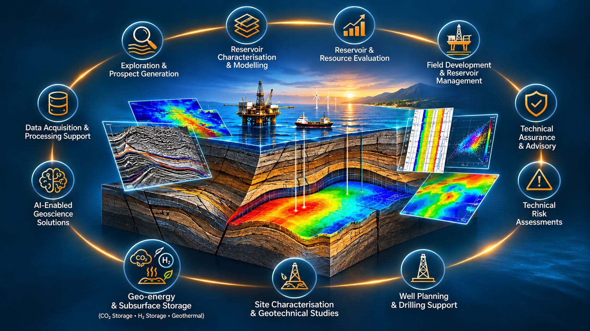

Exploration & Prospect Generation
Integrated basin, play, lead and prospect evaluation, incorporating geological risk and volumetric assessment to identify and mature exploration opportunities.
Learn More
Reducing Uncertainty,
Maximising Value
What we do
We deliver multidisciplinary geoscience and independent technical advisory services tailored to the challenges, opportunities and objectives of each asset.
From data acquisition and interpretation to asset evaluation, field development and investment decisions, our integrated services support operators, asset owners and investors throughout the subsurface asset lifecycle.

Featured Methodology
Building on existing subsurface data, technical studies and investments to generate new insights, identify additional opportunities, better understand uncertainties and unlock greater value.
Integrated basin, play, lead and prospect evaluation, incorporating geological risk and volumetric assessment to identify and mature exploration opportunities.
Learn MoreIntegrated subsurface assessment to estimate resources, evaluate uncertainties and support asset appraisal, development and investment decisions.
Learn MoreIntegrated subsurface support for development concept selection, well placement, infill opportunities, production optimisation and reservoir management.
Learn MoreAdvanced seismic interpretation, AVO/AVA analysis, rock physics, inversion, velocity modelling and depth conversion to improve subsurface understanding and reservoir prediction.
Learn MoreIntegration of geological, geophysical, petrophysical and reservoir data to develop representative subsurface models and evaluate alternative reservoir scenarios.
Learn MoreSurvey planning, technical specifications, acquisition and processing supervision, and independent quality control to maximise data quality and suitability for project objectives.
Learn MoreAI/ML-enabled analysis integrated with geoscience expertise to enhance pattern recognition, interpretation, reservoir prediction and multidisciplinary data integration.
Learn MoreIndependent technical reviews, peer reviews and assessment of subsurface interpretations, methodologies, assumptions and deliverables to strengthen confidence in project decisions.
Learn MoreIndependent subsurface asset evaluation supporting acquisitions, divestments, farm-in/farm-out opportunities, licensing rounds and investment decisions.
Learn MoreStructured assessment of geological, geophysical and reservoir uncertainties, focusing on risks and alternative scenarios that could materially influence project outcomes.
Learn MoreIntegrated geoscience solutions supporting CO₂ storage, geothermal resources, hydrogen storage and emerging subsurface energy applications.
Learn MoreIntegrated geophysical, geotechnical and geohazard assessments supporting offshore and onshore site selection, infrastructure planning and safe project design.
Learn MoreIntegrated subsurface support for well location and trajectory planning, drilling hazard assessment, operational interpretation and post-drill evaluation.
Learn More